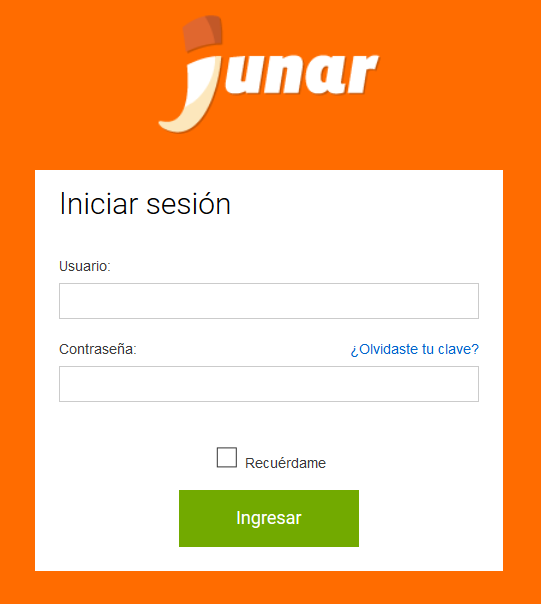

2. Accesibilidad¶
Para acceder a la aplicación los usuarios inician sesión a través de un usuario y contraseña, de esta manera accederán a la Plataforma Junar de Datos Abiertos. Para acceder a la plataforma hacer click en el siguiente link: http://workspace.staging.junar.com/signin/
2.1 Tipos de Roles de Usuarios¶
- Editor: Puede crear, editar y enviar a revisión un conjunto de datos, vistas y visualizaciones. Puede eliminar recursos, siempre y cuando no hayan sido enviados a revisión. En ese caso, solo el Publicador ó Administrador puede eliminarlo
- Publicador: Tiene los mismos permisos del editor pero además puede publicar, despublicar y eliminar todos los recursos.
- Administrador: Tiene los mismo permisos que el publicador pero además puede configurar la cuenta.